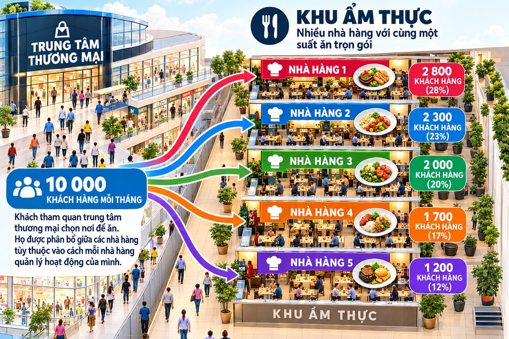
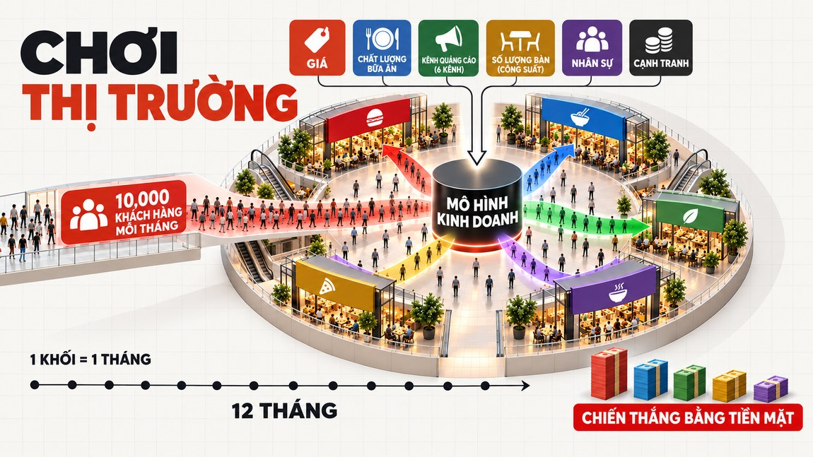
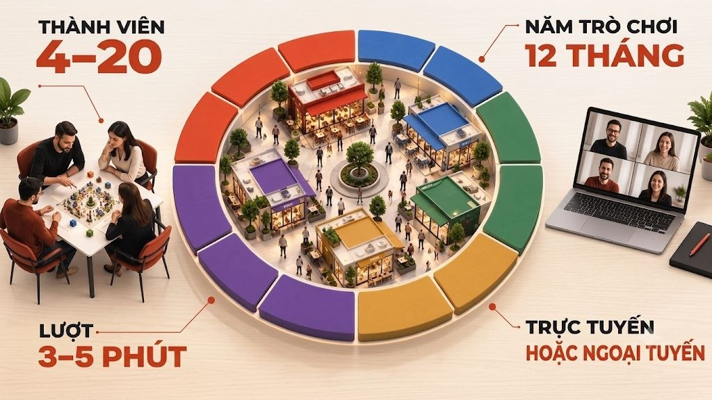
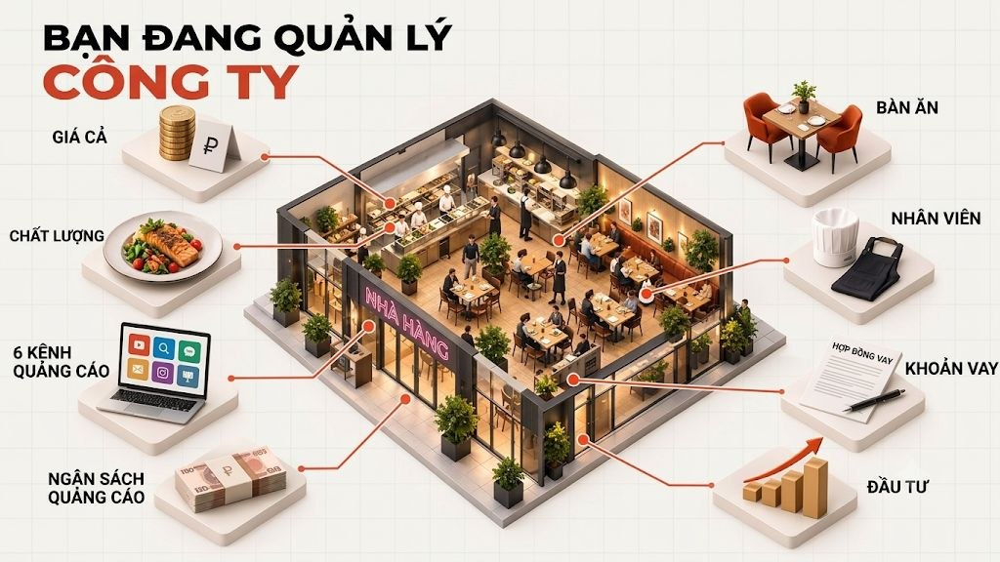
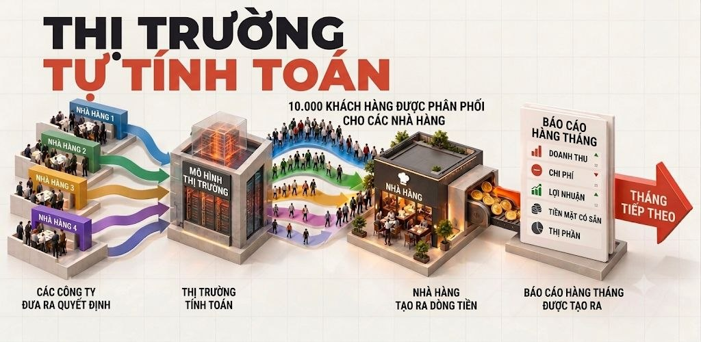
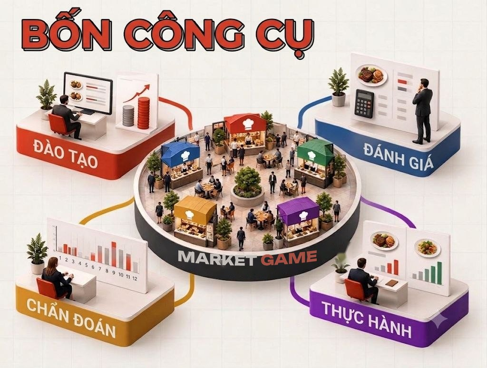

Sẽ không có phần hướng dẫn
Bạn ngồi xuống và chơi ngay. Cơ chế trở nên rõ ràng sau vài tháng đầu — hệt như trong kinh doanh, nơi trước ngày khai trương không ai phát cho bạn bản hướng dẫn và cũng không hỏi bạn có quyền sai hay không.
Bạn sắp khởi nghiệp hay đã đang điều hành — hai giờ ngồi bàn chơi cho bạn thấy điều mà ngoài đời phải trả bằng nhiều tháng học trường kinh doanh và nhiều năm làm việc.

Vài công ty cùng chơi trên một thị trường. Khách hàng là chung cho tất cả, ai cũng phải kéo họ về phía mình. Mỗi lượt là một tháng trong trò chơi: bạn đặt giá, đầu tư vào chất lượng, chọn kênh quảng cáo, kê thêm bàn, tuyển người, vay vốn. Khách vào chỗ bạn hay sang chỗ đối thủ là tuỳ vào quyết định của bạn. Đúng như thị trường thật — và ai kéo được ai là do mô hình tính, không phải người dẫn.
Mỗi tháng có một báo cáo tài chính. Bạn thấy kết quả hành động của mình và, quan trọng hơn, của đối thủ: doanh thu, chi phí, lợi nhuận, mặt bằng giá trên thị trường, tiền còn trong két và thị phần. Sau đó là mổ xẻ, một chiến lược mới và tháng tiếp theo.
Người thắng là người cuối cùng có nhiều tiền trong két nhất.

Đây là toàn bộ trò chơi trên một màn hình. Hãy hình dung nhà hàng màu đỏ chính là bạn. Hạ giá — khách kéo đến, nhưng mỗi hóa đơn mỏng đi. Nâng chất lượng — khách quay lại, bạn giữ được giá cao hơn. Đổ tiền vào quảng cáo — độ nhận biết tăng, nhưng tiền đã rời két ngay lúc này.
Kéo các cần gạt — giá, chất lượng, quảng cáo, số bàn — và thấy ngay khách hàng dịch chuyển giữa năm nhà hàng ra sao, cuối cùng bạn còn lại gì: doanh thu, lợi nhuận, thị phần. Không ai chấm điểm. Chỉ thị trường tính. Trong ván chơi thật cũng vậy — chỉ khác là mười hai tháng liên tiếp và ở bàn bên là những người chơi như bạn. Ở đây các con số được đơn giản hóa, nhưng logic thì đúng y như vậy.
Hãy thử ngay bây giờ. Bên dưới là bản tính thử chạy đúng mô hình đó: kéo các cần gạt và xem điều gì xảy ra. Cả năm nhà hàng đều bắt đầu với 200.000.000 ₫ trong két — sau đó chỉ có các quyết định tạo ra khác biệt.
Màu đỏ trên biểu đồ là bạn
Tiền trong két · tháng 1 / 12
200.000.000 ₫
Khách đến nơi có giá tốt hơn và ngon hơn
Ở đây minh hoạ một năm, như Hạng 12. Các đối thủ đứng yên; trong ván chơi thật, họ đi cùng lúc với bạn, và điều đó thay đổi tất cả.

Bạn ngồi xuống và chơi ngay. Cơ chế trở nên rõ ràng sau vài tháng đầu — hệt như trong kinh doanh, nơi trước ngày khai trương không ai phát cho bạn bản hướng dẫn và cũng không hỏi bạn có quyền sai hay không.
Ba đến năm phút cho mỗi lượt. Giá, chất lượng, kênh và ngân sách quảng cáo, số bàn, nhân sự, các khoản vay. Đối thủ đang làm gì, bạn không biết.
Mô hình phân bổ khách hàng giữa tất cả người chơi và tính lại tiền. Không có điểm số hay thiên vị của người dẫn — chỉ có kinh tế.
Báo cáo về công ty của bạn: doanh thu, chi phí, lợi nhuận, tiền mặt, thị phần. Và bảng chung cho thấy ai đang dẫn trước.
Chiến lược bộc lộ qua một chuỗi lượt đi, chứ không qua một lượt. Sai lầm ở tháng thứ ba đuổi kịp bạn ở tháng thứ bảy, và đó là điều hữu ích nhất mà mô phỏng mang lại.
Sau tháng cuối cùng, chúng ta cùng phân tích ai đã làm gì và vì sao kết quả lại như vậy. Phần học chính diễn ra ở đây.

Không công cụ nào tự nó phát huy tác dụng. Giá thấp mà thiếu chất lượng sẽ mang về những khách không bao giờ quay lại. Quảng cáo mà thiếu sức phục vụ chỉ tạo ra hàng dài không ai phục vụ nổi. Khoản vay bịt được một lỗ hổng dòng tiền và tạo ra một lỗ hổng mới.
Trong trò chơi, bạn điều hành một nhà hàng ở khu ẩm thực. Điều đó không có nghĩa trò chơi nói về nhà hàng.
Hãy thay suất cơm trưa bằng gói thuê bao, dịch vụ lắp cửa, một lần cắt tóc, dịch vụ pháp lý, một khóa tiếng Anh hay một lô hàng từ Trung Quốc — mô hình không thay đổi một bước nào. Nhu cầu có hạn. Đối thủ giành cùng một nhóm người. Giá đối đầu với chất lượng. Quảng cáo có thể không hoàn vốn. Công suất bị chặn bởi tiền. Và lỗ hổng dòng tiền đến trước cả lợi nhuận.
Khu ẩm thực được chọn vì luật chơi của nó ai cũng hiểu trong hai phút, không cần bối cảnh ngành. Sau đó là công việc kinh doanh của chính bạn — chỉ khác là không có rủi ro mất tiền thật.

Cùng một cơ chế phù hợp với mọi ngành kinh doanh: chỉ tấm biển hiệu là thay đổi.
Hỏi AI một chiến lược, bạn sẽ nhận được câu trả lời bài bản, hợp lệ và hoàn toàn tiêu chuẩn. Rắc rối là trên thị trường thật, đối thủ của bạn không phải một mô hình — mà là người đang ngồi ở bàn bên.
Giống như cờ vua. Đánh với máy và đánh với người là hai ván khác nhau. Máy tìm nước đi tốt nhất. Con người thì lì lợm, tháu cáy, phá giá cho bõ tức, sao chép bạn muộn hai tháng, hoặc bất ngờ làm điều mà không phép tính nào đề xuất. Đó chính là thứ không thể chuẩn bị bằng sách vở.
Vì vậy, bàn chơi đáng giá nhất là bàn mà những người còn lại giỏi hơn bạn. Chỉ trong một buổi tối, bạn thấy những nước đi không có trong bất kỳ giáo trình nào, và hiểu con người thực sự hành xử ra sao trên thị trường.
Bạn có thể dựng nên một công ty hoàn hảo. Giá được tính kỹ, chất lượng tử tế, quảng cáo đúng kênh, số bàn vừa khớp nhu cầu — trên giấy mọi thứ đều khớp. Vậy mà vẫn thua, bởi đối thủ bên cạnh đã hành xử theo cách mà mô hình của bạn không hề tính đến.
Số phận của việc kinh doanh không do bộ máy bên trong công ty quyết định, mà do những gì diễn ra giữa bạn và chiếc bàn bên cạnh. Không một nhà tư vấn nào cho bạn thấy điều đó — dù là người hay máy.

Kỹ năng được rèn qua hành động. Không phải bài ghi chép về unit economics, mà là một quyết định sau một tháng hóa thành khoản lỗ.
Chỉ một ván chơi đã thấy rõ một người tính toán ra sao, quyết định thế nào khi thiếu dữ liệu và chịu đòn ra sao. Hồ sơ xin việc không cho thấy điều đó.
Thói quen quản trị lộ ra ngay từ những lượt đầu. Bạn sẽ tự thấy điểm mạnh và điểm yếu của mình, không cần ai chấm điểm.
Trò chơi có thể lặp lại: đổi chiến lược, thử cách khác và so sánh kết quả trên cùng một mô hình.
Kiểm chứng chiến lược và thói quen quản trị ở nơi mà sai lầm chỉ tốn điểm số.
Thấy rõ đội của mình ra quyết định thế nào dưới áp lực và giới hạn thời gian.
Đánh giá năng lực và đào tạo trong cùng một sự kiện, với hành vi quan sát được thay cho bảng hỏi.
Hiểu cái giá của những sai lầm điển hình trước khi phải trả bằng tiền của mình.
Các hạng khác nhau ở độ dài ván chơi và ở những người cùng ngồi vào bàn. Hãy chọn hạng mô tả đúng bạn hôm nay.
Chưa có kinh doanh
650.000 ₫cho cả đội, không tính theo đầu người
Bạn đang chuẩn bị bắt đầu và muốn biết cái giá của những sai lầm điển hình trước khi phải trả bằng tiền của mình.
Việc kinh doanh đã chạy
2.600.000 ₫cho cả đội, không tính theo đầu người
Bạn có tối đa mười nhân viên và doanh thu tới một triệu đô la mỗi năm. Đã đến lúc xem chiến lược của bạn đi được bao xa trên quãng đường dài.
Doanh nghiệp vừa và lớn
78.000.000 ₫cho cả đội, không tính theo đầu người
Một buổi chiến lược: kiểm chứng giả thuyết trên chân trời dài, quan sát đội ngũ quản lý trong lúc làm việc và mổ xẻ từng quyết định.
Giá tính cho cả đội. Đội có bao nhiêu người cũng được: đến một mình, đi hai người, hay mang cả phòng ban. Mỗi ván chơi có từ bốn đến hai mươi đội — bàn càng đông, thị trường càng chật và kết quả càng sòng phẳng.
Xem thì miễn phí. Chưa sẵn sàng chơi? Hãy đến với tư cách khán giả: gửi đăng ký và chọn “Xem một ván — miễn phí”.
Các ván mở diễn ra khắp nước Mỹ — ở cả bốn múi giờ và ở từng tiểu bang — cùng các ván quốc tế bằng tiếng Anh. Giờ hiển thị theo đồng hồ của bạn: trang tự lấy múi giờ từ thiết bị.
Hãy bật JavaScript để xem lịch — hoặc cứ gửi đăng ký, quản lý sẽ báo những ngày gần nhất.
Bạn có thể tham gia bất kỳ ván nào. Ván của một tiểu bang hay một múi giờ chỉ được xếp vào khung giờ tiện cho khu vực đó — bạn không cần sống ở đó. Với Alaska và Hawaii, các ván theo giờ Thái Bình Dương là gần nhất. Nếu không giờ nào hợp, hãy gửi đăng ký và cho biết lúc nào bạn rảnh.
Từ một sai lầm rẻ tiền. Chỉ trong một buổi tối, ván chơi đưa bạn đi hết chặng đường mà ngoài đời mất cả năm: bạn đặt giá, đổ tiền vào quảng cáo, rồi vấp phải lỗ hổng dòng tiền. Ở đây sai lầm tốn điểm số chứ không tốn tiền tiết kiệm. Để rồi khi điều tương tự xảy ra với tiền thật của bạn, bạn đã từng đi qua nó và biết nó kết thúc ra sao.
Ba hạng đấu: 650.000 ₫ mỗi đội nếu bạn chưa có kinh doanh; 2.600.000 ₫ nếu việc kinh doanh đã chạy — tối đa mười nhân viên và doanh thu tới một triệu đô la mỗi năm; 78.000.000 ₫ cho buổi chiến lược dành cho doanh nghiệp vừa và lớn. Giá luôn tính cho cả đội, và đội có bao nhiêu người cũng được.
Có, và hoàn toàn miễn phí. Gửi đăng ký và chọn “Xem một ván — miễn phí”: chúng tôi sẽ báo ván gần nhất và gửi đường link hoặc địa chỉ. Bạn sẽ thấy thị trường phản ứng với các quyết định ra sao và buổi phân tích diễn ra thế nào — rồi mới quyết định có chơi hay không.
Chỉ khác ở hai điều: độ dài ván chơi và những người cùng ngồi vào bàn. Hạng 12 là mười hai lượt giữa những người mới bắt đầu. Hạng 24 là hai mươi bốn lượt giữa các chủ doanh nghiệp đang hoạt động. Hạng 36 là ba mươi sáu lượt giữa các chủ doanh nghiệp vừa và lớn. Bản thân mô hình thị trường ở mọi hạng đều như nhau — chúng tôi không thiết lập riêng theo ngành của bạn.
Đó là tháng trong trò chơi, không phải tháng ngoài đời: bạn không phải chờ một năm, càng không phải ba năm. Cả ván chơi gói gọn trong một buổi, và một tháng trong game là một lượt đi dài ba đến năm phút. Các hạng khác nhau ở chỗ bạn đi được bao nhiêu lượt, và nhìn được hậu quả quyết định của mình xa đến đâu.
AI sẽ đưa bạn một chiến lược bài bản và tiêu chuẩn — đúng thứ không bao giờ xảy ra trên thị trường thật. Ở đó đối thủ của bạn là con người: họ lì lợm, tháu cáy, phá giá cho bõ tức và đi những nước mà không phép tính nào lường trước. Ván chơi cho bạn thứ không nhà tư vấn nào cho được — cách đối thủ thực sự hành xử, thay vì một bài giải trong sách.
Cả hai đều được. Cơ chế giống hệt nhau: bạn ra quyết định, mô hình tính toán, mọi người cùng thấy kết quả. Trực tiếp có thêm những cuộc đàm phán sống động ngay bàn bên; trực tuyến cho phép gom đội từ nhiều thành phố.
Không. Sẽ không có phần hướng dẫn trước ván chơi, và đó là chủ ý. Cơ chế trở nên rõ ràng sau vài tháng đầu, hệt như trong kinh doanh, nơi trước ngày khai trương không ai phát cho bạn bản hướng dẫn.
Khoá học giảng cho bạn về unit economics. Ở đây chính bạn đặt giá, chính bạn mất khách, và chính bạn đọc báo cáo cho thấy quảng cáo đã không hoàn vốn. Không ai chấm điểm: chỉ thị trường tính.
Được. Một đội gồm một người vẫn là một đội, và giá vẫn như vậy. Bạn sẽ chơi với những người tham gia khác, không phải với người dẫn.
Sai lầm ở đây chỉ tốn điểm số. Mọi thứ còn lại đúng như ngoài đời.